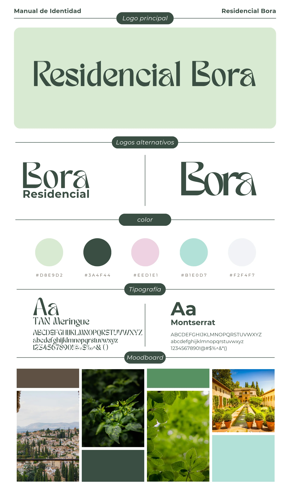
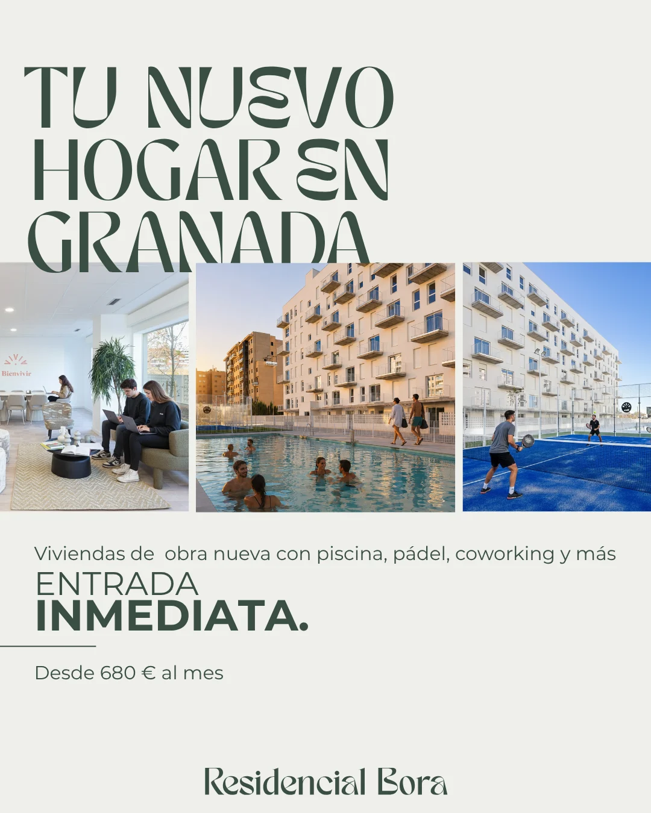
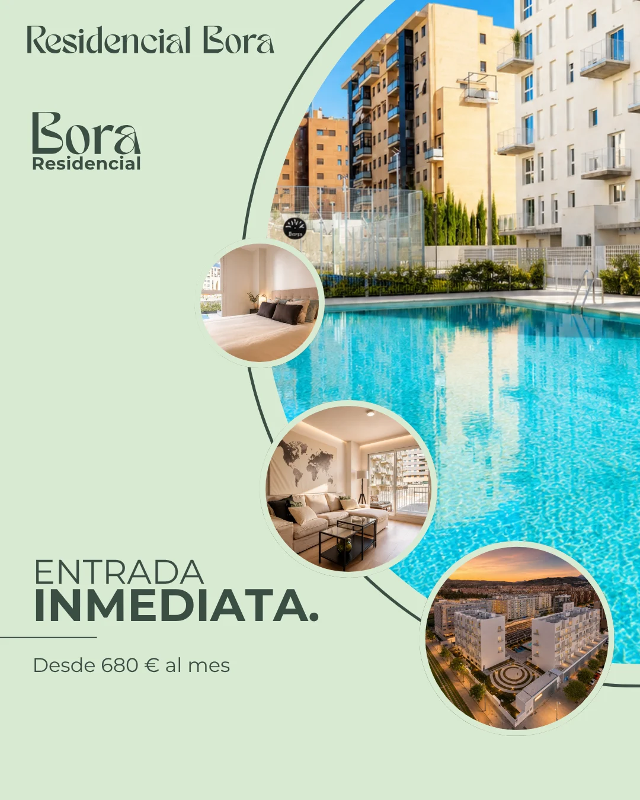
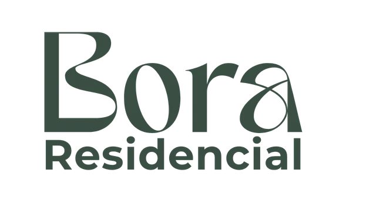
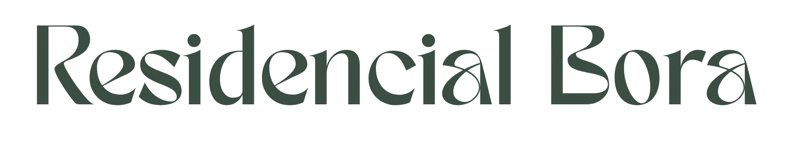
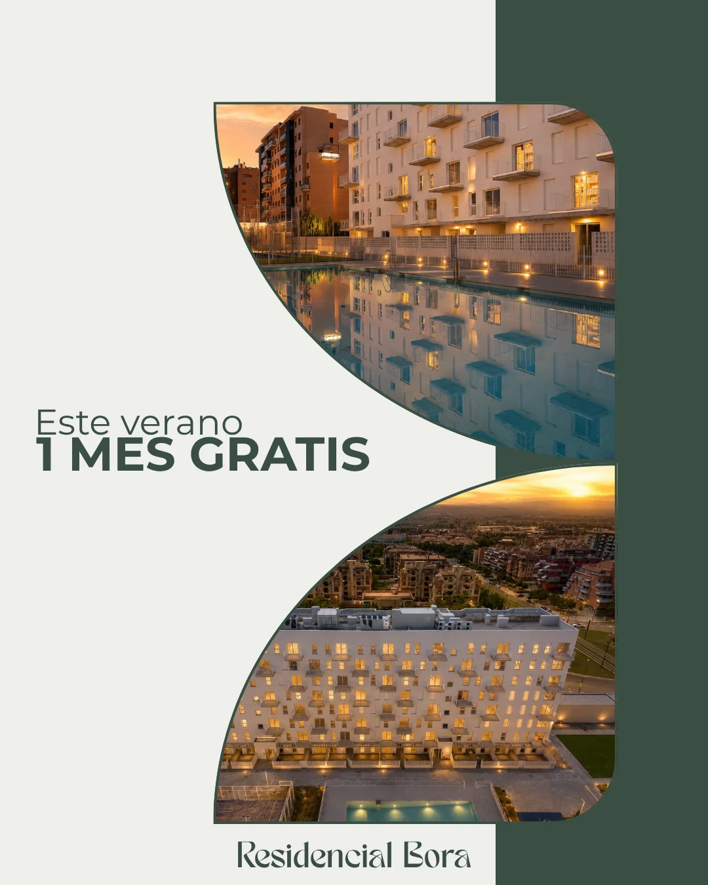
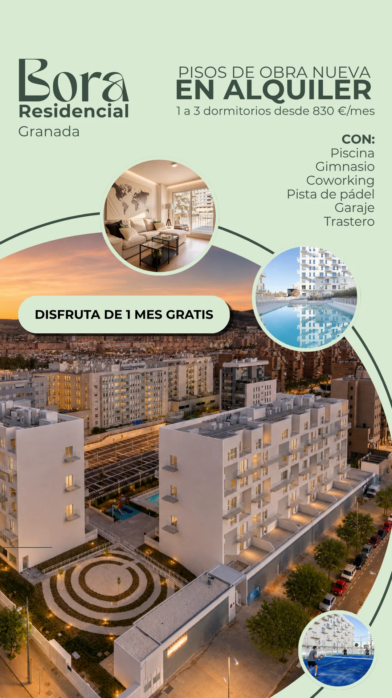
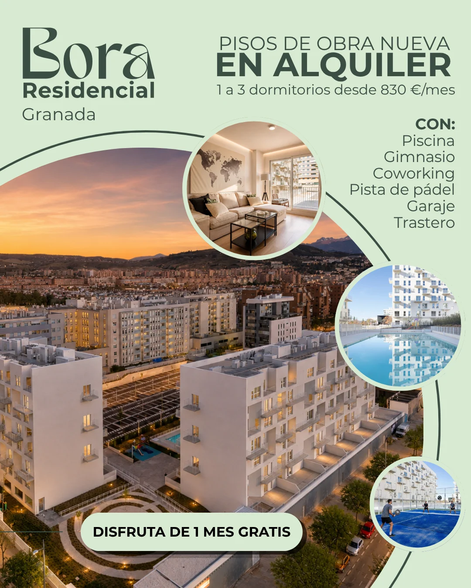
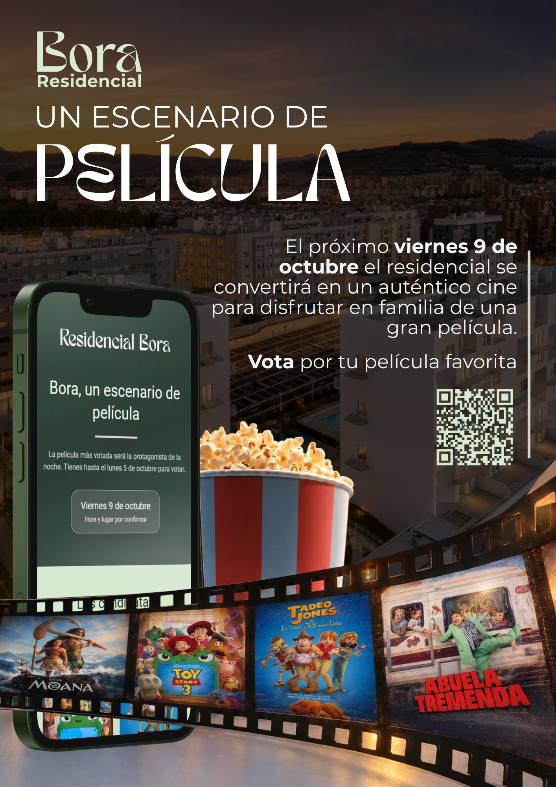
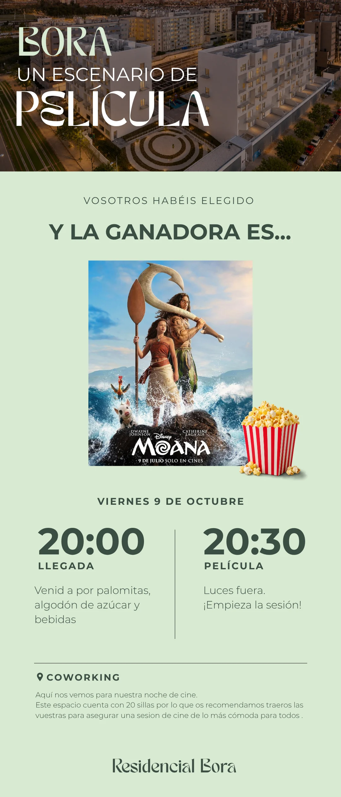

Residencial Bora
Rebranding de una promoción residencial inspirado en los jardines de la Alhambra, con landing en WordPress.
Rebrand of a residential development inspired by the gardens of the Alhambra, with a WordPress landing page.

- Sector
- Inmobiliario · residencialReal estate · residential
- AñoYear
- 2025
- Mi rolMy role
- Rebranding completo y diseño y montaje de la landing en WordPress.Full rebrand, plus design and build of the WordPress landing page.
- EntregablesDeliverables
- Logotipo y versiones, paleta, tipografía, manual de identidad, landing, dossier y carteleríaLogo and versions, palette, typography, identity manual, landing page, dossier and signage
- HerramientasTools
- Illustrator · InDesign · Canva · WordPress
01El retoThe challenge
Bora tenía una identidad anticuada e inconsistente que no estaba a la altura de la promoción. Necesitaba una marca elegante y serena que funcionara igual en la web, en el dossier comercial y en la obra.Bora had a dated, inconsistent identity that did not match the development. It needed an elegant, serene brand that worked equally well on the website, in the sales dossier and on site.
02ProcesoProcess
- La Alhambra como punto de partidaThe Alhambra as a starting point
Jardines, agua y piedra: un verde Alhambra profundo con acentos rosa y aguamarina.Gardens, water and stone: a deep Alhambra green with pink and aquamarine accents.
- Contraste tipográficoTypographic contrast
TAN Meringue aporta el carácter; Montserrat, la lectura clara en textos largos y en la web.TAN Meringue brings character; Montserrat keeps long copy and the website readable.
- Una versión para cada soporteA version for every medium
Logo principal, en negativo y horizontal, para que funcione en web, dossier y vallas.Primary, reversed and horizontal logos, so it works on web, dossier and hoardings.



03SoluciónSolution
El sistema y sus aplicaciones en contexto.The system and its applications in context.


ColorColour
#3A4F44#D8E9D2#B1E0D7#EED1E1#F2F4F7TipografíaTypography



04ComunidadCommunity
La marca también habla con quien ya vive allí. Más aplicaciones.The brand also speaks to the people who already live there: for “Bora, un escenario de película” I designed the poster, the film vote and the emails to residents.

